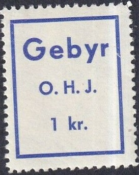
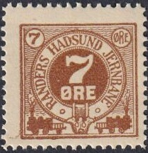

"O.K.M.J." design in a square. I've seen 5 o blue, 10 o red, 40 o brown, 50 o yellow, 90 o green, 100 o grey and 150 o orange
Return To Catalogue - Denmark - Denmark Railway Stamps, overview
Note: on my website many of the
pictures can not be seen! They are of course present in the
catalogue;
contact me if you ant to purchase it.
1900 with weight inscription 10 o violet 20 o red 25 o red 25 o green Without weight inscription 15 o violet (1904 with small star, 1910 with large star) 20 o red (1904 with small star, 1910 with large star)
Another set was issued in 1907
"O.K.M.J." design in a square. I've seen 5 o blue, 10 o
red, 40 o brown, 50 o yellow, 90 o green, 100 o grey and 150 o
orange

In this design I have seen 45 o violet, 50 o green, 60 o grey and
90 o brown.
1953 I've seen this stamp with a cancel from 1959.
I've seen some buslabels with "Odense - Kjerteminde - Martofte OMNIBUSRUTER for Gods" or "for Pakker".

In this design I have seen: 5 o blue 10 o red 40 o brown 50 o yellow 60 o violet 100 o grey 150 o orange


Large sized stamps. 20 o blue, 25 o blue, 35 o green.


Smaller size, very similar stamps were issued for
Hørve-Vaersleve Jernbane (see next image above).
In the smaller sized stamp design I have seen: 40
o red and black, 50 o green and black, 60 green, 60 o orange and
black, 70 o orange and black, 80 o lilac and black, 90 o red and
black, 90 o violet and black, 200 o violet and black
and the following overprints:
"10" on 70 o yellow and black, "10 Ore" on 40
o red and black, "70" on 60 o black and yellow, "1
Kr." on 90 o red and black, "10 Kr."on 20 o yellow
and black.

"Gebyr O.H.J. 1 kr." blue
1877 A 20 o blue stamp was issued with inscription "FRIMAERKE FOR PAKKER UNTIL 10 PUNDS VAEGT"
First issued stamps in 1879.


20 o green (10 Pund), 25 o green (5 Kilogram), 25 o red,
"75" (violet) on 90 o green


In this smaller design, I have seen with
"GODSFRIMAERKE": 25 o red, 40 o yellow, 90 o green and
with "BANEMARKE": 50 o violet, 75 o brown.

Pictorial design: "10 ØRE" on "70 ØRE" on
60 o (Elverhoj).
In pictorial designs with inscription
"O.S.J.S." were issued: 90 o (Bjornslev), "70
ØRE" on 25 o (Vallo), "80 ØRE" on 50 o
(Elverhoj), "110 ØRE" on 25 o (Bjornslev), "120
ØRE" on 60 o (Elverhoj),
"10 ØRE" on "70 ØRE" on 60 o (Elverhoj, see
image above).
"175 ØRE" on "120" on 60 o (Elverhoj).
Some more modern imperforate stamps with "O.S.J.S." also exist: 10,00 kr red and black (Steyrs).

25 o blue, also a very similar stamp for the "NAESTVED -
PRAESTO MERN BANEN"
With inscription "SCHÕNEMANN LITH
NYBORG" bottom center: 25 o blue.
With inscription "AXEL E. AAMGØTS LIT. ETABL."(?)
bottom left: 25 o blue
Without inscription at the bottom: 10 o red, 15 o red, 25 o blue.



1896: With "RH" in fancy blue letters at the bottom: 20
o red, 1 K grey

I have also seen 10 o blue, 25 o green, 30 o blue, 40 o red, 50 o
black, 80 o brown, 1 Kr grey, 3 Kr lilac, 5 Kr green, 10 Kr
yellow. Slightly different types exist. Also overprints: "20
ØRE" and 5 bars and 8 squares on 3 Kr lilac (see image
above) "60" on 50 o green, "90" on 25 o
green. Also with double overprint "30" (violet) on
"60" on 50 o green (see image above).
"JERNBANE" horizontally.
Other, later issues:

1947 Modern train, inscription "1947": 90 o black and red.
Design with a railway bridge: 50 o blue and black, 70 o green

Steam locomotive design
Steam locomotive: 75 o grey and red.
Railroad crossing with steam train: 50 o red
Statue: 125 o green
1958: Station building with trainbus, inscription
"1883-1858": 100 o red, blue and black.
Also 100 o red and black (without "1883-1858"
inscription).
Stamps with "RNOJ" very similar to the Ringkobing Ornhoj Holstebro Jernbane stamps were issued in 1920(?).
Examples

With 1946 cancel; similar stamps but with inscripton
"RNOJ" were issued forRingkobing Nørreomme Jernbane
In the above design I have seen: 25 o green 35 o light or dark green 40 o green 50 o light green 80 o green (1953) "100" on 10 o red "100" on 40 o green "100" on 40 o green (1952) "110" (blue) on 35 o green "110" (blue) on 35 o red "10 Øre" (blue) and blue bar on "110" (blue) on 35 o green "10 Øre" and bar on 35 o red

1956 In the above design I've also seen (values in black) with inscripton "JERNBANE" 60 o blue and black 70 o dark blue and black 90 o brown and black 150 o lilac and black "125" and bars on 120 o orange and black With inscription "RUTEBILER" 25 o orange 75 o violet

Stamps with a locomotive design were first issued in 1911: 10 o blue 20 o red, 25 o green,


Issued in 1911: 15 o blue with broad top of the "R".
Also exist: 25 o green, 35 o red, 45 o violet. In a sligthtly
modified design in 1920: 30 o blue, 60 o green, 90 o red. A
number of provisional overprints exists (1922-1927); here
"90" (violet) on 15 o red. .
1944 Map of the railway inscription "RGGJ GODSFRIMAERKE": 75 o blue.


1939 design: 10 o brown, 40 o green, 60 o blue, 90 o red.
Reissued in 1951: 80 o green, 90 o yellow, 110 o red, 125 o
brown. Also "10" on 25 o, "10" on 110 o,
"30" on 25 o, "70" on 40 o (see image above),
"1 Kr." on 60 o. The Ebeltoft - Trustrup Railways
issued a similar stamp (next image above).
Another stamp with "R.G.G.J GODFRIMAERKE" with a map of the railway exist: 75 o blue.
The first stamps were issued in 1912.


1912: I've seen 15 o red, 25 o green, 35 o green, 50 o red,
"30" on 50 o red, "45" (red) on 25 o green,
"75" on 35 o green, "90" (red) on 35 o green.
Sorry, no image available yet.
{kind=link}